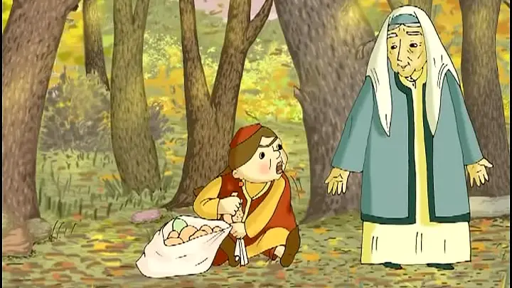
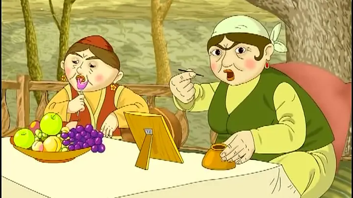

Zumrat va qimmat
Chapter 4

— Nega yig‘layapsan, qizim? — deb so‘rabdi kampir.
— Uyimni ko‘rib qoldim, ketgim kelyapti, — deb yig‘isini davom ettiribdi Qimmat.
Ha, mayli, boraqol. Tomdagi sandiqni o‘zing bilan olib tush.
Qimmat xursand bo‘lib ketibdi sandiqni tomdan olib tushibdi.
Sandiqni uyingga borganda ochasan, — debdi kampir va qizga kalitni beribdi.
Lekin kampir Qimmatga ot, arava bermabdi, u sandiqni orqalagancha, uyiga piyoda ketibdi.
Qimmatni qaytayotganini olapar itlari sezibdi. It jahldor kampirni oldiga borib:
Vov, vov, vov! Opam kelayotir! Ilon tola sandiqni orqalab kelayotir, — deb vovullabdi.
Kampir g‘azablanib, tayoqcha bilan itni urib, oyog‘ini sindiribdi.

Mening aqlli qizim kelyapti, qimmatbaho mollar keltiryapti, — o‘zida yo‘q xursand emish kampir.
Qimmat uyiga zo‘rg‘a-zo‘rg‘a yetib kelibdi. Qo‘shnilar yig‘ilibdi. Qimmat onasi bilan sandiqni ochmaslik uchun ustiga o‘tirib olishibdi. Kechqurun sandiqni ichkari xonaga olib kirib, eshiklarni mahkam yopishibdi-da sandiqni ochishibdi-yu, “Voy, dod, qutqaringlar! Ajdar! Yordam beringlar!” — deb baqirishga tushishibdi.
Sandiqdan ikkita kattakon ajdar chiqib kampir bilan qizni yutib. derazadan chiqib ketishibdi.
“Dod-voy!”ni eshitib qo‘ni-qo‘shnilar yordam berish uchun yig‘lishibdi, eshikni buzishib ichkariga kirishsa, kampir ham, qizi ham yo‘q emish. Rosa qidirishibdi, topisholmabdi.
Chol Zumrad qizi bilan shod-xurram yashashibdi.
by Laziz